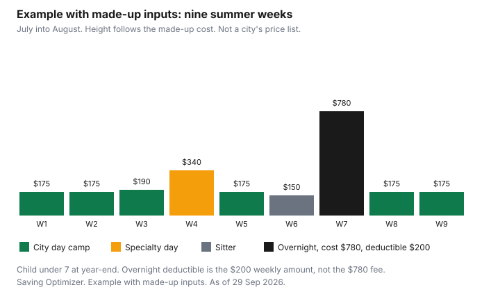

Kids · Canada
Summer Day Camps in Canada: Budgeting, Registration Timing and Claiming Them as Child Care

In Canada, summer day camp can be claimed as a child care expense on Form T778, usually by the lower-income spouse. Overnight camp is limited to a weekly amount of $200, $125 or $275, depending on the child. Registration dates come from your city’s recreation guide. Summer is a second childcare bill, and it arrives when the school-year care has stopped. The useful move is to name the weeks, separate day camp from overnight camp, and know which weeks can go on Form T778. Prices are local. This page does not print a national average. The tax limits are national, and they are in the Income Tax Act. The nine-week sketch uses made-up fees so the columns have something to add.
Key takeaways
- Check your city's recreation guide for the registration date. There is no national open day. Early spring is when you read the guide, not a date this page invents.
- Day camp can be a child care expense. Overnight camp is limited to the weekly amount: $200, $125, or $275, which is 1/40 of the annual limit.
- The lower-income spouse usually claims, on Form T778. The full rules are on the child care expense guide.
- A provincial $10-a-day or fee-cap program applies only when that camp's provider is actually in the program. Ask. Do not assume a municipal week is covered.
- Example with made-up inputs: nine weeks cost $2,335, of which $1,755 is the deductible column, because the overnight week is capped at $200.
When registration opens and why early spring matters
Cities do not share one registration morning. Toronto, Calgary, Halifax, and a rural township can open weeks apart, and a school-board camp can ignore the city's date.
Check your city's recreation guide, and check the school board if the camp is theirs. Write the open date, the time, and whether you need an account already created. "Early spring" on this page means late winter or early spring on your calendar, because that is when those guides are usually out and because popular weeks fill. It is not a claim that every city opens in March.
The money side is a sinking fund, not a surprise in June. The sinking-fund guide is the place for a bill you can see from January. A week you cannot get is not solved by paying more in July. A week you can get, and then cancel, depends on the terms in the last section. If the summer includes a trip, the family vacation guide is the lodging math, and the March break guide is a different week with the same habit: decide the care before you decide the outing.
Day camps vs overnight camps: the tax difference
Folio S1-F3-C1 lists a day camp or day sports school as child care, and a boarding school or camp, including a sports school where lodging is involved, as child care only within the weekly cap. Day camp is not given that weekly cap.
It still has to be care, not a training program, and it still counts toward the annual amount: $8,000 if the child is under 7 at the end of the year, $5,000 for another eligible child, or $11,000 if the disability tax credit can be claimed. Those amounts are in section 63. The weekly amount is 1/40 of the annual amount.
For a young child's sports day camp, the folio's general view is that there is enough child care even when the program includes sport. For an older child's ongoing, goal-oriented program, with certified instructors and measured progress, the folio's general view is that education and training are what you are paying for, not care. Read paragraph 1.17 before you claim a competitive summer. Meals included in a day camp fee are not disqualified. Food you buy separately is not the fee.
| Type | How the deduction treats it | Weekly cap |
|---|---|---|
| Day camp, no lodging | Can be child care, up to the annual amount and two-thirds of earned income | No weekly camp cap. The annual amount still applies. |
| Overnight camp or boarding school | Allowed only up to the periodic amount times the weeks attended. The rest of the fee is not a child care expense. | $200 under 7, $125 otherwise, $275 if the disability amount applies |
| Sports program that is really training | The folio may treat it as education, not care | Not a child care expense if the folio's test says it is training |
Claiming day camp on T778, and the weekly limits for overnight camp
You claim on Form T778, line 21400. The lower-income spouse usually claims.
An individual who runs a home day camp has to put their social insurance number on the receipt. A city or a company receipt does not need a SIN, because the payee is not an individual. Keep the receipt. The steps, the Part C exceptions, and the earned-income limit of two-thirds are on the child care guide. Unclaimed camp fees cannot be carried to next summer.
An overnight week for a child under 7 contributes $200 to the deduction, even when the camp charged $780. The other $580 is the cost of the trip, not a deduction. Add the weeks. Two overnight weeks are $400 for that child, still inside the $8,000 annual amount, and still inside whatever earned income allows. Do not multiply the full invoice by the number of weeks and call it the deduction.
City camps, school-board camps and subsidies
A city camp and a school-board camp are local products. Hours, the bus, and whether lunch is included are on that guide.
A subsidy is also local. Check the recreation guide for a fee-assist line. Canadian Tire Jumpstart and KidSport publish their own tests. This page does not quote an income cut-off or a grant maximum for either. Open the organization's page for the season you are booking.
Provincial child care fee programs are not the same as a camp subsidy. They apply when the provider is in that program.
- Ontario: parents of children under 6 do not apply for the Canada-wide fee reduction. If the licensed provider is not enrolled, fees are not reduced. The page states a $22 a day cap for children aged 0 to 5 in enrolled programs, as of 1 January 2025, and says 93 percent of licensed spaces for ages 0 to 5 were in enrolled programs as of June 2026. A camp that is not enrolled licensed care is outside that cap. Ask the operator.
- Quebec: the reduced contribution for a subsidized childcare centre is $9.65 a day for 2026, indexed each 1 January. The 2027 rate is not stated on that page. Check Quebec. A camp that is not a subsidized centre sets its own rate. The page says non-subsidized centres generally charge more.
- British Columbia: at $10 a Day ChildCareBC centres, families pay no more than $200 a month per child for full-time enrolment during regular business hours. Families do not apply for the Child Care Fee Reduction Initiative. Providers opt in. Check whether the summer program is in it.
- Alberta: the child care subsidy page cited here covers children in full-time kindergarten to grade 6 in a licensed program outside school hours, for families earning under $90,000. It says summer rates rise in July and August. Its grade 2 example moves from a maximum of $366 in June to $644 in July and August, then back to $366 in September. An extra $100 a month is available when the child needs four or more extended hours in the month. Use Alberta's estimator. The page points elsewhere for fees for younger children. Check that page too.
- Saskatchewan: the November 2025 extension runs from 2026–27 to 31 March 2031. Regulated care reached an average of $10 a day on 1 April 2023. A child who turns six while still in care keeps the $10-a-day rate for the rest of that school year. A July camp after the school year has ended is a separate question. Ask the operator.
- Anywhere else: check your province and your city. Do not copy another province's daily rate.
Building a 9-week summer plan with made-up inputs
Example with made-up inputs. One child who will be under 7 at the end of the year, so the overnight week is capped at $200 and the annual amount is $8,000.
Nine weeks, July into August. Five city day-camp weeks at $175, one city week at $190, one specialty day-camp week at $340, one week with an eligible sitter at $150, and one overnight week at $780. The sitter in this fiction is not a parent, is not under 18 and related, and the receipt shows a SIN. If your sitter fails those tests, that week's deductible column is zero. These fees are not a city's prices.
Cost is $175 times 5, plus $190, plus $340, plus $150, plus $780. That is $875 + $190 + $340 + $150 + $780 = $2,335. The deductible column uses $200 instead of $780 for the overnight week. That is $875 + $190 + $340 + $150 + $200 = $1,755. The $1,755 is under the $8,000 annual amount. It is not the whole answer. Daycare from the rest of the year counts toward the same $8,000, and the claim cannot exceed two-thirds of the claimant's earned income. Add the summer to the year. Do not file the summer alone.
| Week | Care, made-up | Cost | Deductible in this sketch |
|---|---|---|---|
| 1, 2, 5, 8, 9 | City day camp | $175 each, $875 together | $875 |
| 3 | City day camp | $190 | $190 |
| 4 | Specialty day camp | $340 | $340 |
| 6 | Eligible sitter, SIN on the receipt | $150 | $150 |
| 7 | Overnight camp | $780 | $200 |
| Total | Nine weeks | $2,335 | $1,755 |

Refund and cancellation terms to check
Read the cancellation rule before you pay the deposit. Look for the last day a full refund is available, whether a later cancel becomes a credit for next year, and whether illness requires a doctor's note. This page does not state a percentage, because camps do not share one. A credit you cannot use is not the same as cash back in the account that pays September.
If the camp refunds you, the refunded amount is generally not still a child care expense. The Act denies a deduction for an amount you were entitled to be reimbursed, aside from a narrow case where the reimbursement was included in income. Keep the message that shows the refund. If you move the child to a different week, ask for a new receipt that matches the week you claim.
An activity credit, in a province that has one, is a different line from this deduction. Quebec, Manitoba, and Nova Scotia are on the activity credit guide. Do not put the same camp fee on both if the rules do not allow it. When in doubt, claim the one the form allows and leave the other blank.
Sources
- Income Tax Act, section 63, current to 21 September 2026, as of 29 Sep 2026. Annual amounts and the 1/40 weekly amount. Overnight and boarding fees above that product are not child care expenses.
- CRA folio S1-F3-C1, as of 29 Sep 2026. Day camp and day sports school. Overnight cap. Meals included in day camp. Training versus care in paragraph 1.17. No carry-forward.
- CRA, how to claim line 21400, as of 29 Sep 2026. Form T778. Individual caregiver's SIN.
- Ontario, Canada-Ontario early years and child care agreement page, as of 29 Sep 2026. No parent application for children under 6. No reduction if the provider is not enrolled. $22 a day cap for ages 0 to 5 in enrolled programs. 93 percent of licensed 0 to 5 spaces enrolled as of June 2026.
- Quebec, childcare centre costs, as of 29 Sep 2026. Reduced contribution $9.65 a day for 2026, indexed each 1 January. 2027 rate not stated.
- British Columbia, ChildCareBC programs, as of 29 Sep 2026. $10 a Day centres: no more than $200 a month per child for full-time regular hours. Families do not apply for the fee reduction initiative.
- Alberta, Child Care Subsidy Program, as of 29 Sep 2026. School-age subsidy under $90,000 family income. Grade 2 example $366 in June, $644 in July and August, $366 in September. Extended-hours $100 when four or more extended hours are needed in the month.
- Canada and Saskatchewan news release, 28 November 2025, as of 29 Sep 2026. Extension from 2026–27 to 31 March 2031. Average $10 a day from 1 April 2023. A child who turns six while in care keeps that rate for the rest of the school year.
- Camp fees in the nine-week table are an example with made-up inputs. Jumpstart and KidSport amounts are not quoted.
Frequently asked questions
Can I claim summer camp on my taxes?
A day camp can be a child care expense when it is care that lets you work, carry on a business, do funded research, or study in a qualifying program, and the other tests in section 63 are met. You claim it on Form T778, usually on the lower-income spouse's return, and the annual limits still apply: $8,000, $5,000, or $11,000 per child. This is not tax advice. Read the child care guide and the CRA folio.
Is overnight camp deductible?
Only up to the weekly amount times the weeks the child attended. The weekly amount is 1/40 of the annual limit: $200 if the child is under 7 at year-end, $125 in the other eligible case, and $275 if the disability tax credit can be claimed. A fee above that weekly amount is not a child care expense. Board and lodging are allowed only inside that cap.
When should I register for summer camps?
Check your city's recreation guide, because there is no national open date. Late winter or early spring is when you read that guide, since the city sets the date and popular weeks fill. A school-board camp can use a different calendar, so write the deadline down when you see it. A reminder may not come.
What if a camp is cancelled or my child gets sick?
The refund is whatever the camp's cancellation terms say, and this page does not state a percentage. Read the terms before you pay, including the date a credit becomes a refund and what happens if your child is ill. A fee you were reimbursed for is generally not still deductible. Keep the email that shows what you got back.
Do municipalities offer camp subsidies?
Check the city's recreation guide for a fee-assist program, because the rules are local. Jumpstart and KidSport publish their own eligibility, and this guide does not quote their amounts. A provincial child care fee reduction is a different program, and it applies only when the provider is actually enrolled. Ask the camp which program, if any, it is in.
Researched and drafted with AI assistance and fact-checked against official Canadian sources. How we create content.